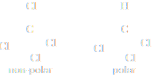

Dipole-Dipole interactions
In a bond between two atoms having large difference in electronegativities the electron cloud is distorted to such an extent that one of the atom acquire a partial negative charge (δ−) and other a partial positive charge (δ+). This polarity or charge separation in molecules results in a dipole where two equal and opposite charges are separated, by a distance.
The dipole moment is a measure of the polarity of the molecule and may be expressd as
μ = q ⋅ r
where q is the charge and r the vector distance separating the two charges. Dipole moment, μ is expressed in debyes 1 D = 3.336 ⋅ 10−30 C ⋅ m.
When molecules having permanent dipole, approach each other, the electrostatic frorces between them, align the molecules to maximize the attractions between positive and negative ends. The interaction between the poisitive end of one diole and the negative end of another dipole are called dipole-dipole interactions. As a result of dipole-dipole interactions, polar molecules are held together more strongly than nonpolar molecules. For example, HF has μ = 1.98 D, which lies along the H−F bond. As the F atom has a greater electronegativity (4.0) than the H atom (2.1), electrons are therefore pulled strongly towards F.
| δ+H−δ−F | |
| |⟶ | |
| μ = 1.98 D | |
However, the simple presence of a polar bond in a molecule is not enough to make the molecular polar. There may be even number of such polar bonds or dipoles in opposite directions in space making the compound as a whole non-polar.
Similarly considering the BCl3 molecule, as a result of the difference in the electronegativities of B and Cl, the B−Cl bond is polar in nature. However, the geometry of the molecule is trigonal planar, and symmetric. The respective dipole-moments of the B−Cl bond cancel each other, thereby causing a zero-dipole moment. So the BCl3 molecule is non-polar.
CCl4 is a symmetrical molecule, therefore the dipole moments of all four C−Cl bond cance each other and the resultant dipole moment is zero. Trichloromethane (CHCl3, also called chloroform) has 1.0 1 D dipole moment value suggesting the bond moments do not cancel each other.
Come prevedere la variazione del punto di ebollizione in base alle interazioni dipolo-dipolo


p-dichlorobenzene having two symmetric C−Cl dipoles has the zero dipole moment while o-dichlorobenzene is polar, because the dipole moments of C-Cl do not elide themselves. Thus o-dichlorobenze as an higher boiling point (180 °C) than p-dichlorobenzene (174°C).
Se nell'ambito di una molecola i dipoli di legami si elidono, allora la molecola in quanto tale non presenta momento dipolare e va soggetta solamente alle forze di London.
Per valutare l'intensità delle interazioni dipolo-dipolo confrontiamo l'entalpia di vaporizzzione di un solido costituito da molecole polari con l'entalpia reticolare di un solido ionico. In entrambi i casi ΔH misura l'energia necessaria a separare le molecole o gli ioni. L'entalpia di vaporizzazione del cloruro di idrogeno solido è 18 kJ mol−1; l'entalpia reticolare di NaCl è 787 kJ mol−1, quasi 50 volte maggiore. L'interazione dipolo-dipolo è più debole delle interazioni ioniche nei solidi ionici, perché nel primo caso intervengono solamente le cariche parziali dei dipoli.